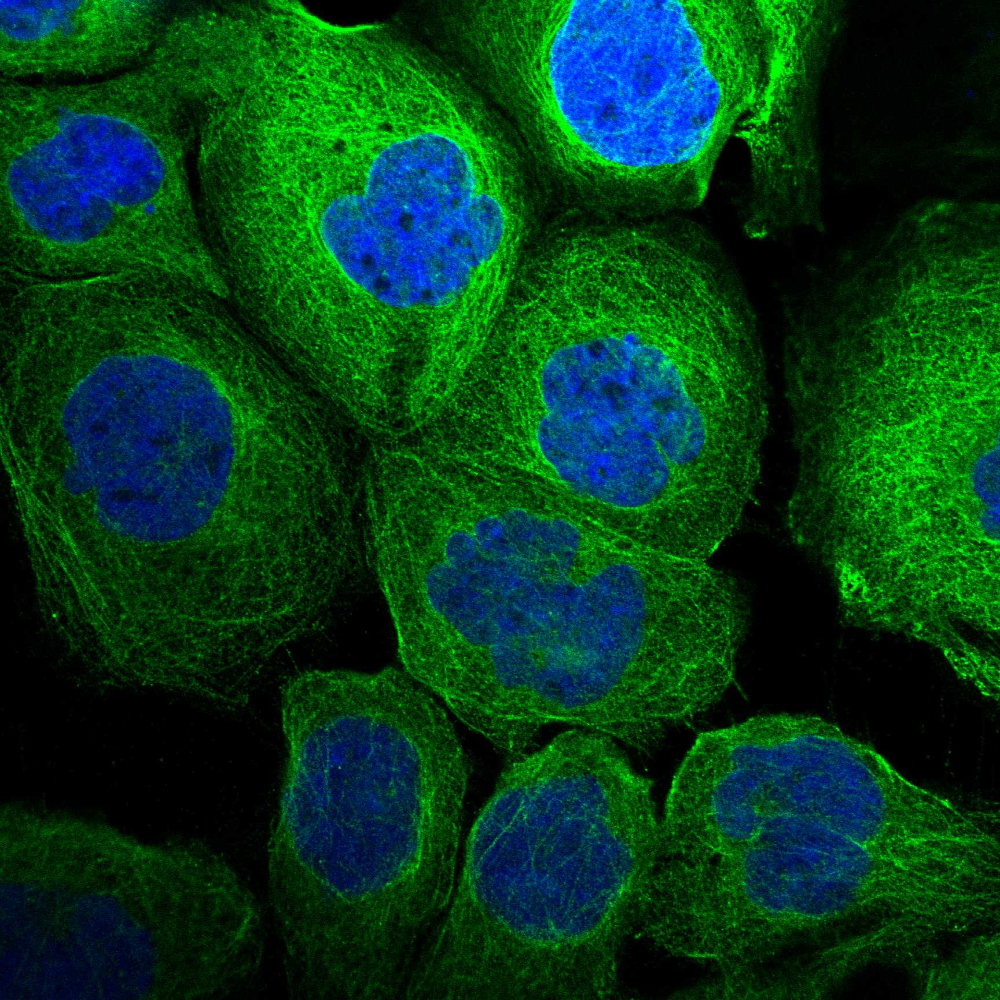
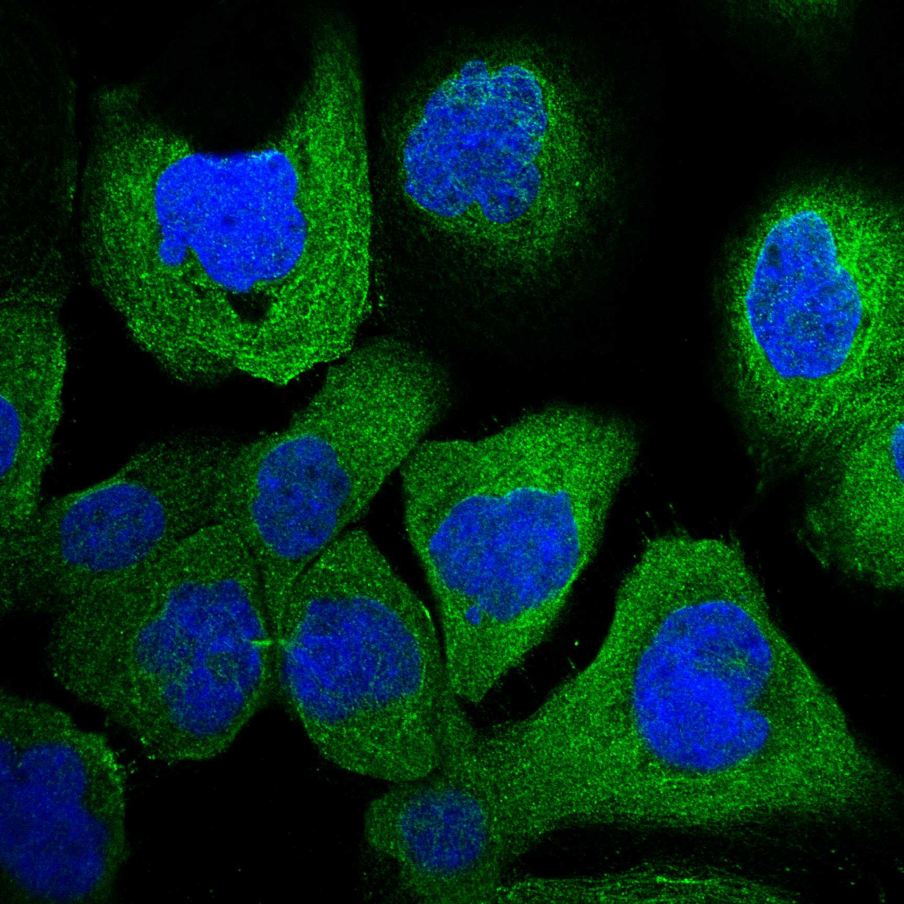
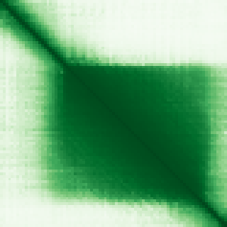

type: protein-evaluation gene: "BBLN" date: 2026-05-29 tags: [protein-scout, nuclear-protein, evaluation] status: rejected ---
BBLN 核蛋白评估报告
1. 基本信息
| 项目 | 内容 |
|---|---|
| 基因名 / 别名 | BBLN / |
| 蛋白大小 | 83 aa / 9.1 kDa |
| UniProt ID | Q9BUW7 |
| 评估日期 | 2026-05-29 |
2. 评分总览
| 维度 | 得分 | 满分 | 加权后 | 关键证据摘要 |
|---|---|---|---|---|
| 🔴 核定位特异性 | 0/10 | ×4 | 0.0 | 无核定位; Cell junction+Cytoplasm only |
| 📏 蛋白大小 | 5/10 | ×1 | 5.0 | 83 aa, 83 aa (<100 aa) |
| 🆕 研究新颖性 | 10/10 | ×5 | 50.0 | PubMed 7 篇 (≤20, 极度新颖) |
| 🏗️ 三维结构 | 8/10 | ×3 | 24.0 | pLDDT 80.3 |
| 🧬 调控结构域 | 7/10 | ×2 | 14.0 | Coiled-coil 结构域 |
| 🔗 PPI 网络 | 0/10 | ×3 | 0.0 | 无 PPI 数据 |
| ➕ 互证加分 | — | max +3 | +0 | 不适用 (淘汰) |
| 原始总分 | 93.0/183 | |||
| 归一化总分 | 50.8/100 |
3. 详细分析
3.1 核定位证据
| 来源 | 定位 | 可信度 |
|---|---|---|
| GeneCards | Cell junction; Cytoplasm, cytoskeleton | — |
| Protein Atlas (IF) | Cell junctions + Cytosol (HPA Approved, A-431) | Approved |
| UniProt | Cell junction; Cytoplasm, cytoskeleton | 实验/GO注释 |
 
结论: BBLN 是细胞连接和胞质骨架蛋白, 完全无核定位。核定位评分 0, 淘汰。
3.2 蛋白大小评估
评价: 仅 83 aa, 蛋白极小。
3.3 研究现状
| 指标 | 数值 |
|---|---|
| PubMed 总数 | 7 篇 |
| 最早发表年份 | 2014 |
| Chromatin/epigenetics 比例 | 无 |
主要研究方向:
- 细胞连接结构蛋白
- Bublin coiled-coil 蛋白基础研究
评价: 虽极度新颖 (7 篇), 但因核定位 0 分淘汰。
3.4 三维结构分析
| 指标 | 数值 |
|---|---|
| AlphaFold 平均 pLDDT | 80.3 |
| 有序区域 (pLDDT>70) 占比 | 61.4% |
| Very High (>90) 占比 | 51.8% |
| 可用 PDB 条目 |
PAE 图: 
评价: AlphaFold pLDDT 80.3, 结构质量良好但蛋白太小。
3.5 结构域分析
| 来源 | 结构域 |
|---|---|
| GeneCards | Coiled-coil region |
| SMART/InterPro | Coiled-coil |
| UniProt/Pfam | Coiled-coil |
染色质调控潜力分析: 仅含 coiled-coil 结构域, 无染色质调控潜力。
3.6 PPI 网络
无高置信度 PPI 数据。
评价: 无 PPI 数据。
3.7 多库互证
| 维度 | 来源 | 结果 | 一致？ |
|---|---|---|---|
| 三维结构 | AlphaFold + PDB | — | — |
| 结构域 | UniProt / InterPro / Pfam | — | — |
| PPI | STRING + IntAct + GO-CC | — | — |
| 定位 | Protein Atlas / UniProt / GO | — | — |
互证加分明细: 淘汰蛋白。
总分: +0 / max +3
4. 总体评价
推荐等级: N/A (淘汰/5)
核心优势: 1. AlphaFold 结构质量良好
风险/不确定性: 1. 完全无核定位 2. 蛋白极小 (83 aa) 3. 功能研究极少
下一步建议:
- [ ] 淘汰: 核定位 0 分
5. 关键文献
暂无关键文献 (PubMed 7 篇)。
6. 数据来源
- GeneCards: https://www.genecards.org/cgi-bin/carddisp.pl?gene=BBLN
- Protein Atlas: https://www.proteinatlas.org/search/BBLN
- PubMed: https://pubmed.ncbi.nlm.nih.gov/?term=%22BBLN%22
- UniProt: https://www.uniprot.org/uniprotkb/Q9BUW7
- STRING: https://string-db.org/
- AlphaFold: https://alphafold.ebi.ac.uk/entry/Q9BUW7